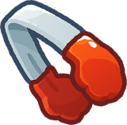

Leaderboard
Xếp hạng người chơi, đội và thi đấu tuần: điểm số, cách hiển thị, điều kiện mở và phần thưởng.
Trong trang này
Tổng quan LeaderboardCác nhánh và phạm vi xếp hạngĐiều kiện mở và cập nhật dữ liệuĐiểm xếp hạng cá nhânThông tin mỗi hàng người chơiXếp hạng độiThi đấu tuần — nhiệm vụ và phần thưởngPhân biệt các hệ thống có thứ hạngPhạm vi dữ liệu hiện cóTổng quan Leaderboard
Giao diện Leaderboard có 3 nhánh: Weekly, Player và Team. Hai nhánh Player và Team có bộ lọc World / Country. Trang này mô tả cấu trúc, quy tắc và phần thưởng tìm được trong bản APK; không có danh sách tài khoản hoặc thứ hạng trực tiếp từ máy chủ.
Các nhánh và phạm vi xếp hạng
| Nhánh | Phạm vi | Thông tin chính | Phần thưởng |
|---|---|---|---|
| Player · Người chơi | World / toàn cầu; Country / quốc gia | Hạng, hồ sơ, tiến trình level, đội đang tham gia. Có hàng riêng cho bản thân. | Chưa tìm thấy bảng thưởng riêng cho thứ hạng Player. |
| Team · Đội | World / toàn cầu; Country / quốc gia | Hạng đội, biểu tượng/cờ, tên, số thành viên, tổng điểm. | Chưa tìm thấy bảng thưởng riêng cho thứ hạng Team toàn cầu/quốc gia. |
| Weekly · Tuần | Bảng thi đấu tuần của Weekly Contest | Điểm tuần, thứ hạng, hồ sơ người chơi; kết quả chốt theo tuần. | Có 3 dòng thưởng hạng trong cấu hình Weekly Contest; xem bảng bên dưới. |
Điều kiện mở và cập nhật dữ liệu
| Thông số | Giá trị xác minh | Cách diễn giải |
|---|---|---|
| Mốc mở Leaderboard | Mặc định 10 | Có thể bị thay bởi cấu hình máy chủ; chưa quy đổi thành level/map cụ thể trong FoodiePop. |
| Mốc mở Weekly Contest | Mặc định 10 | Có bộ kiểm tra mở riêng, không chỉ dựa vào nhánh Player/Team. |
| Số người chơi yêu cầu | 100 | Lượt tải Player yêu cầu skip=0, limit=100 cho bảng toàn cầu và quốc gia; không có nghĩa chỉ có 100 người tham gia. |
| Giới hạn tải lại Player/Team | 600 giây = 10 phút | Khi đã có dữ liệu và không ép tải lại, dùng bộ nhớ đệm trong khoảng này. Không phải cam kết tự tải đúng mỗi 10 phút. |
| Chờ tài khoản máy chủ | Timeout 8 giây trong mã | Luồng tải có bước chờ server ID; thiếu ID có thể chưa tải được bảng. |
| Quốc gia | Country code của hồ sơ | Có bước bảo đảm mã quốc gia trước khi tải bảng Country; không suy ra trực tiếp từ ngôn ngữ giao diện. |
| Mạng / dữ liệu | Có trạng thái lỗi mạng ở Player và Team | Thứ hạng hiển thị có thể là dữ liệu đã tải trước đó; cần máy chủ để biết kết quả hiện tại. |
Điểm xếp hạng cá nhân
Hàm tính điểm trong thư viện sử dụng ba chỉ số hồ sơ:
| Thành phần | Ý nghĩa | Trọng số |
|---|---|---|
levelMain | Tiến trình level chính lưu trong hồ sơ | 10.000 điểm mỗi đơn vị |
numbFirstTryWin | Số lần thắng ngay lần thử đầu | 100 điểm mỗi lần |
weeklyContestTop1 | Số lần đứng đầu Weekly Contest | 1 điểm mỗi lần |
Ví dụ tính minh họa: levelMain = 25, thắng lần đầu = 18, top 1 tuần = 2 → rankScore = 251.802. Đây là phép tính minh họa, không phải dữ liệu một tài khoản trong game.
Bộ xử lý thắng chỉ tăng numbFirstTryWin khi là chế độ thường, không phải chơi lại và được đánh dấu lần thử đầu. Không đồng nhất chỉ số này với chuỗi thắng liên tiếp. Công thức có trọng số hữu hạn; chưa có quy tắc máy chủ xử lý hai người trùng điểm hoặc xác thực lại điểm để kết luận thứ tự cuối cùng.
Thông tin mỗi hàng người chơi
| Thông tin | Cách thể hiện / tương tác |
|---|---|
| Thứ hạng | Có mẫu hàng riêng top 1, 2, 3 và hàng thường; biểu tượng top là hình trang trí thứ hạng. |
| Nhận diện hồ sơ | Tên, avatar, khung avatar, hiệu ứng tên; có nút mở xem hồ sơ. |
| Tiến trình | Hiển thị level hồ sơ; rankScore là điểm tổng hợp, không phải số level hiển thị. |
| Đội của người chơi | Có vùng tên đội và cờ/biểu tượng đội. |
| Vị trí bản thân | Lưu riêng hạng toàn cầu và hạng quốc gia; có hàng bản thân và cơ chế giữ vị trí hiển thị khi cuộn. |
| Dữ liệu tải về | Có danh sách người chơi và thứ hạng bản thân; chưa có ảnh chụp phản hồi máy chủ thực tế. |
Xếp hạng đội
| Thông tin / quy tắc | Chi tiết |
|---|---|
| Dữ liệu mỗi hàng | Hạng, cờ/biểu tượng, tên đội, số thành viên và điểm đội; chạm để mở thông tin đội. |
| Điểm đội | Mô hình đội có totalScore do dữ liệu đội cung cấp. Chưa xác minh công thức tổng hợp cuối cùng ở máy chủ, nên không tự cộng điểm thành viên để đưa ra điểm đội. |
| Toàn cầu / quốc gia | Hai danh sách riêng; có bộ nhớ đệm và thời điểm tải riêng so với bảng người chơi. |
| Thưởng đội | Chưa có bảng thưởng cho Team Leaderboard. Thưởng mốc và top đóng góp của Team Treasure là cơ chế event riêng, xem tab Events. |
Thi đấu tuần — nhiệm vụ và phần thưởng
Nhánh Weekly sử dụng giao diện Weekly Contest. Mục tiêu là tích điểm để đạt thứ hạng cao khi tuần kết thúc. Bộ sắp xếp phía ứng dụng đặt điểm cao lên trước; bảng phần thưởng lưu rank bắt đầu từ 0. Nguồn cộng điểm trong vòng chơi FoodiePop và quy tắc ghép nhóm trên máy chủ chưa được xác nhận.
| Vị trí thưởng | Rank trong cấu hình | Điều kiện | Phần thưởng từng loại |
|---|---|---|---|
| 1 | 0 | Kết thúc tuần ở vị trí tương ứng | Kim cương (hard) × 100  Tongs — gắp nguyên liệu × 1 |
| 2 | 1 | Kết thúc tuần ở vị trí tương ứng | Tongs — gắp nguyên liệu × 1 |
| 3 | 2 | Kết thúc tuần ở vị trí tương ứng | Tongs — gắp nguyên liệu × 1 |
Xem thêm Weekly Contest trong tab Events và Team Treasure.
Phân biệt các hệ thống có thứ hạng
| Hệ thống | Xếp hạng theo | Chu kỳ / phạm vi | Thưởng đã tìm thấy |
|---|---|---|---|
| Player Leaderboard | Điểm hồ sơ tổng hợp theo công thức trên | World / Country; chưa xác nhận reset định kỳ | Chưa có bảng thưởng riêng |
| Team Leaderboard | Điểm đội trong dữ liệu máy chủ | World / Country; chưa xác nhận reset định kỳ | Chưa có bảng thưởng riêng |
| Weekly Contest | Điểm thi đấu tuần | Theo tuần; quy tắc ghép nhóm chưa xác nhận | 3 vị trí thưởng |
| Team Treasure | Điểm đội và top đóng góp trong event | Theo trạng thái event; chưa xác nhận lịch live | 3 mốc đội + 3 dòng top đóng góp |
| Stage Race | Tiến trình hoàn thành level trong chặng đua | 3 chặng; cấu hình có người chơi mô phỏng | Thưởng thắng từng chặng |
Không suy ra Player/Team/Weekly đều có người chơi mô phỏng chỉ vì Stage Race có cấu hình mô phỏng. Chưa có dữ liệu để kết luận tính chất đối thủ trong các bảng này.
Phạm vi dữ liệu hiện có
Đã đối chiếu cấu trúc giao diện, trường hồ sơ, công thức điểm cá nhân, ngưỡng bộ nhớ đệm, yêu cầu tải 100 người và bảng thưởng tuần. Danh sách người chơi, điểm đội thực tế, hạng tài khoản, tie-break trên máy chủ và lịch áp dụng cần dữ liệu phiên chơi trực tiếp; trang báo cáo không tự tạo các giá trị đó.